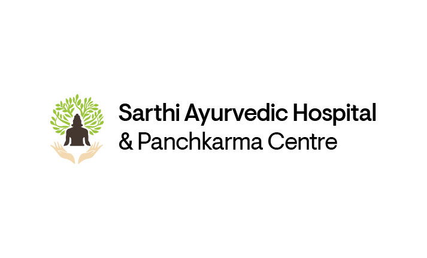
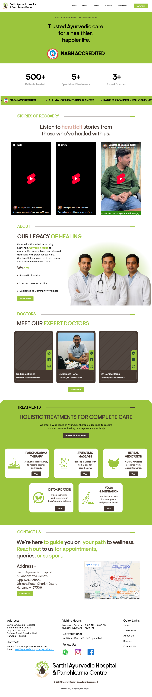

Sarthi Ayurvedic Hospital
This was the project that made me think about users and their needs, instead of designing a brand identity from market research.
Scroll
Project context
Sarthi is a real Ayurvedic hospital in Charkhi Dadri, Haryana. It is NABH accredited and accepts government panels: ESI, CGHS and Ayushman Bharat.
I first approached it as a brand identity project. The hospital did not adopt the brand identity, but they adopted my website design, which was later hosted on their domain.
The problem: The hospital's details lived only on third-party websites, so patients had no credible source of their own. Most of its patients are older people who are not comfortable with websites.
How I decided on contact: The hospital runs its patient communication through WhatsApp Business, and its personal number is rarely used.
Final artifacts
A website design that puts treatments, panels, NABH accreditation and contact details in one place.

Key design moments
WhatsApp as the contact
The WhatsApp icon opens the hospital's business WhatsApp directly, so users can contact the hospital without hunting for a number. I chose it because that is the number the hospital already uses with patients, while the personal number is rarely used.
Everything in one place
The main goal was to show all the information together. NABH accreditation is something everyone checks, and the government panels matter most to government employees, who get benefits through them. So both sit up front.
Impact
Not measured.
The hospital adopted the design. The hospital does not promote the website, so I do not know whether anyone has used the WhatsApp button, and I have no usage data.
Impact
In this website design I had to think beyond identity.
In brand identity we design the identification through which a business gets recognition. Here I had to give patients key information they had no source for before.
The visual design is where I would improve the most. If I had the chance, I would explore a system easy enough for older people to book their own appointment, or for a son or daughter to do it, to avoid waiting at the hospital. That is an idea, not something I tested.